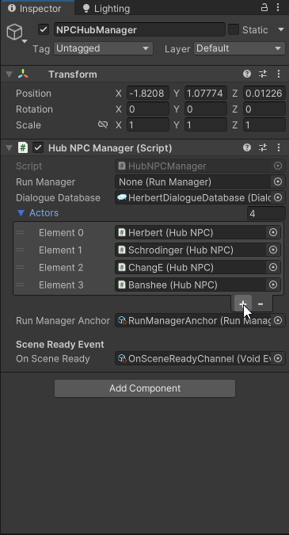
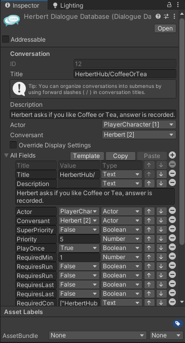
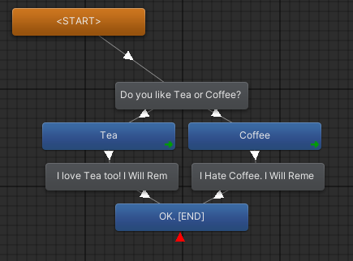

Dialogue System
Adding new Actor to the HUB
To add a new Actor to the hub
In the Dialogue Editor Menu:
The Dialogue Editor Menu can be found at the menu bar up the top under Tools->Pixel Crushers->Dialogue System->Dialogue Editor.
- Select the Actors tab (in between Database & Quests/Items) and Add a new Actor to the list.

- Change the Name of the newly created actor and make sure it is selected, view the details of the actor in the right hand side inspector.
- Make a note of the ID field (should be uneditable) and recall this as ActorID.
- Open the Portrait Textures dropdown and drag in the actor's portrait art (Will eventually be replaced with Portrait Sprites in due time)

In the Hub_Location Scene:
The Hub_Location scene can be found in the Project files under Scenes/Locations/Hub_Location.unity
- Drag an EmptyNPC prefab from the Project files under Prefabs/Characters into the scene and rename and position it accordingly. Make sure the GameObject is disabled (Dark grey in the hierarchy).
- Keeping it selected, within the right hand side inspector, assign Actor ID under the Hub NPC script to the previously noted ActorID from the corresponding Actor entry under the Dialogue Editor Menu.
- Under the NPCHubManager object in the hierarchy, In the Hub NPC Manager script, open the Actors dropdown.
- Create a new element in the list, and drag in the EmptyNPC you've renamed and changed. 
The Actor should now be properly configured and become enabled once they have a conversation that allows them to spawn.
Adding new conversation
In the Dialogue Editor Menu:
- Select the Conversations tab (in between Variables & Templates).
- Directly under the Conversations tab is the Conversations toolbar, press the (+) button next to the dropdown conversation selector to add a new conversation.

Double click the empty space (the background grid) within the Conversation Graph window (this will default to selecting the conversation as a whole in the right hand side inspector).
Change the Title field in the RHS inspector. Use naming convention NPC NAME/CONVERSATION TITLE to make use of submenus in the conversation selector. (i.e. "Maurice/FirstMeeting" without quotes)
- Take note of the Actor and Conversant fields. Change the Conversant to the NPC who owns this conversation. Leave the Actor field as PlayerCharacter. 
Now you can edit the conversation flow using the main window (Conversation Graph).
Grey nodes indicate the NPC is speaking, Blue nodes are the player.
A Grey node that splits into multiple Blue nodes is a node that gives the PlayerCharacter a branching choice. (Please do not make more than 4 branching choices for a one node, the UI at the moment can support only 4 choices max at one time.)

Conversation settings & conditions
With the conversation selected (Select empty space (the grid) within the Conversation Graph window) open the All Fields dropdown at the bottom of the RHS inspector.

Important fields to take note of are:
RequiredConversations : Array of conversation Titles that need to have been triggered by the player before this conversation can spawn in. (Used for sequencing conversations across multiple runs)
RequiredFalseConversations: Array of conversation Titles that need to have not been triggered by the player before this conversation can spawn in. (Good for making sure that this conversation will not spawn in after a certain event/conversation)
RequiredMinNPCInteractions: Amount of total conversations the player has to have had before this conversation can spawn in. (Good for random quips that aren't integral to the storyline)
Priority: Numerical priority ranking for deciding which conversation to spawn in if there are multiple valid options. (Lower number is higher priority)
PlayOnce: If true this conversation will not spawn in again after it has triggered once.
Other fields/conditions are not tested/fully implemented yet.